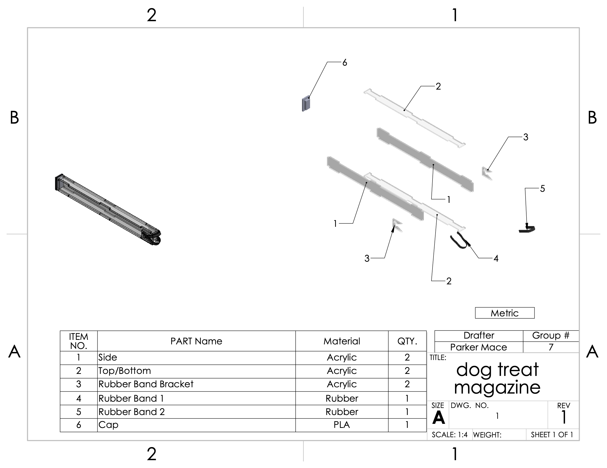

Service Dog Treat Dispenser
Our team built a treat dispenser for a real client: a man who uses a wheelchair and works with a service dog. The goal was to let him reward his dog on his own from his chair. I designed the treat magazine, the part that stores the treats and feeds them to the dispensing end.
- Designed the magazine as a long, clear acrylic channel built from tab-and-slot side, top, and bottom panels, so the treat level is visible at a glance.
- Designed a rubber-band gate at the outlet: two bands stretched across acrylic brackets hold the stack of treats in place, then flex to let one treat through when it's pushed out. That makes getting a treat out easy for him from his chair, with no latch or door to work. A 3D-printed PLA cap closes the other end.
- Modeled every part in CAD and made the assembly drawing and bill of materials.
